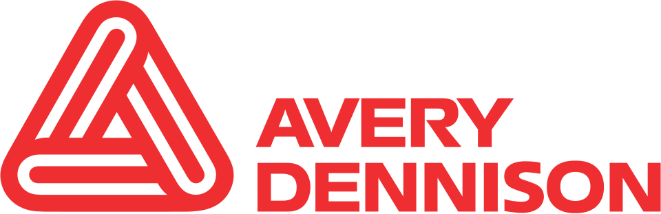

Avery Dennison
Avery Dennison은 감압 접착 소재, 의류용 브랜드 라벨과 태그, RFID 인레이, 특수 의료 제품을 제조하고 유통하는 미국의 다국적 기업이다.
최종 업데이트

Avery Dennison는 어떤 브랜드인가
Avery Dennison은 라벨과 그래픽, 반사·기능성 소재를 비롯한 감압 소재를 제조한다. 사업은 Materials Group과 Solutions Group의 두 부문으로 구성한다.
Solutions Group은 RFID, 브랜드 태그와 장식, 데이터 관리, 식별, 가격 및 생산성 관련 솔루션을 제공한다. 회사는 50개가 넘는 국가에서 사업을 운영하며 전 세계에서 35,000명을 고용한다.
2023년 총매출은 $8.4 billion이며 Fortune 500에서 421위를 기록했다.
Avery Dennison는 어떻게 시작되고 성장했나
Stanton Avery 부부는 1935년 로스앤젤레스에서 Kum Kleen Products라는 합자회사로 사업을 창업했다. 회사는 1937년 Avery Adhesives, 1946년 Avery Adhesive Label Corp., 1958년 Avery Adhesive Products, Inc., 1964년 Avery Products Corporation, 1976년 Avery International Corporation으로 사명을 변경했다.
1990년 Dennison Manufacturing Company와 합병하며 사명을 Avery Dennison으로 변경했다. Russell Smith는 1946년 지분 소유자로 합류해 핵심 라벨 소재 사업과 미국·유럽 사업 확대, 연구센터 설립, 뉴욕증권거래소 상장을 주도했다.
Avery Dennison의 브랜드 아이덴티티는 무엇인가
감압 접착 소재를 기반으로 라벨과 RFID, 의류 브랜딩, 정보관리 솔루션을 함께 운영하는 사업 구성이 구별점이다.
Avery Dennison의 대표 제품과 서비스는 무엇인가
Materials Group은 라벨, 그래픽, 반사 소재와 기능성 소재를 포함한 감압 소재를 생산한다. Solutions Group은 RFID 인레이, 브랜드 태그와 장식, 데이터 관리, 식별, 가격 및 생산성 관련 제품과 솔루션을 제조한다.
회사는 의류용 브랜드 라벨과 태그, 특수 의료 제품도 공급한다. 과거에는 Avery 브랜드의 바인더, 파일 라벨, 이름표 등 사무·소비자 제품을 운영했으나 2013년 해당 사업을 CCL Industries에 매각했다.
Avery Dennison는 지금 어떤 상태인가
Avery Dennison은 미국 Mentor에 본사를 두고 50개가 넘는 국가에서 사업을 운영한다. 2023년 Materials Group은 $5.8 billion, Solutions Group은 $2.6 billion의 순매출을 기록했다.
회사는 사무·소비자 제품 사업을 매각한 뒤에도 전체 사명과 역사, 브랜드, 로고를 유지한다.
Avery Dennison 로고는 어떻게 변해왔나
자주 묻는 질문
Avery Dennison는 어느 나라 브랜드인가요?
Avery Dennison는 미국의 에너지·산업재 브랜드입니다.
Avery Dennison는 언제 설립되었나요?
Avery Dennison는 1935년 설립되었습니다.
Avery Dennison의 브랜드 아이덴티티는 무엇인가요?
감압 접착 소재를 기반으로 라벨과 RFID, 의류 브랜딩, 정보관리 솔루션을 함께 운영하는 사업 구성이 구별점이다.
Avery Dennison의 대표 제품은 무엇인가요?
Materials Group은 라벨, 그래픽, 반사 소재와 기능성 소재를 포함한 감압 소재를 생산한다.
Avery Dennison는 현재 어떤 상태인가요?
Avery Dennison은 미국 Mentor에 본사를 두고 50개가 넘는 국가에서 사업을 운영한다.
Avery Dennison의 창업자는 누구인가요?
Avery Dennison의 창업자는 R. Stanton Avery입니다(위키데이터 기준).
Avery Dennison의 본사는 어디에 있나요?
Avery Dennison의 본사는 글렌데일에 있습니다(위키데이터 기준).
출처와 검증
Avery Dennison 관련 참고: 공식 웹사이트 · 위키데이터 Q790650 · 영어 위키백과. 브랜드명은 한글과 원어를 함께 표기하되 데이터에 없는 표기는 만들지 않습니다. 기원 국가·설립연도는 검수된 정의문에서 확인된 값을 우선하고, 없을 때만 공식 웹사이트 URL이 일치하는 위키데이터 개체의 값을 씁니다. 위키데이터 값은 2026-09-12 기준입니다.